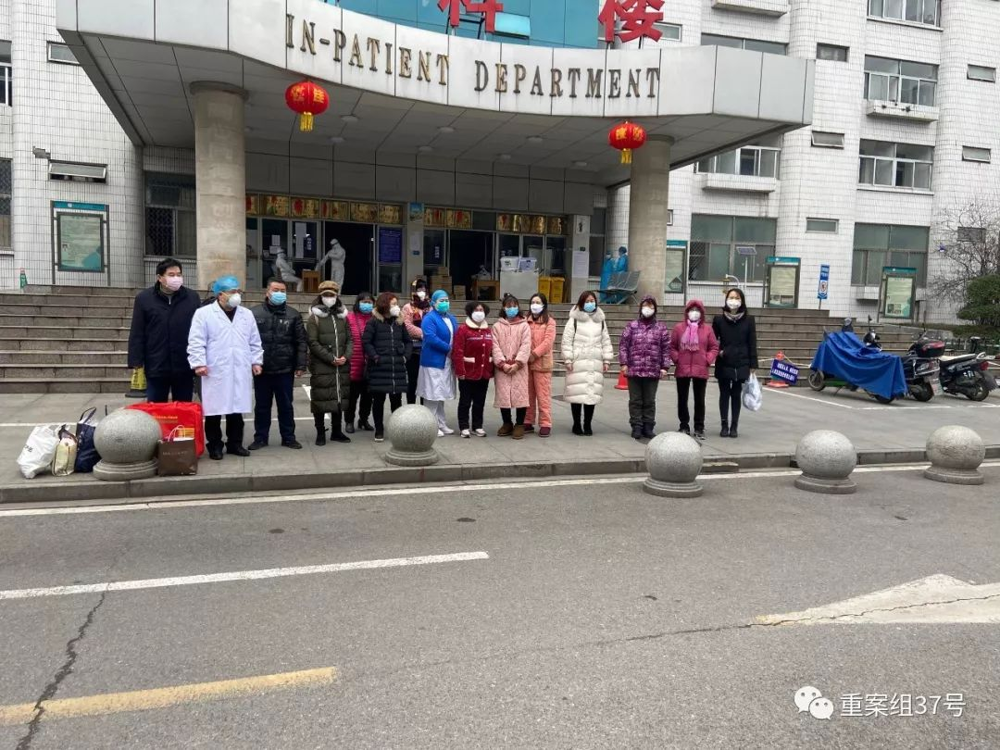
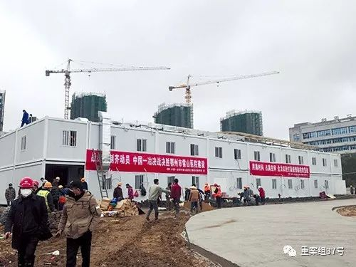

*****
***** ***
***口述实录 | 这对父子是列车长和护士，他们冲上了抗疫前线……
原文链接 备份链接 编者按：这是一对父子。父亲赵华明是铁路上海客运段京沪车队的列车长。17年前非典时期，他跑1461/1462次京沪绿皮车。今年新型冠状病毒疫情之际，他仍出乘，跑临客，去重庆。与17年前不同的是，当年在读小学的儿子赵程，如 …
***** *****
*****
*****从地图上看，鄂州被武汉、黄冈、黄石“包围”，它的面积只有1594平方公里，是湖北省面积最小的地级市，但因武汉、黄冈是湖北疫情最为严重的两个地区，鄂州的疫情也比较严峻。*****

2月8日，鄂州市一个新冠肺炎患者集中留观点内，工作人员正在布置房间。来源：鄂州市政府微博
文 | 新京报记者 周世玲 潘闻博
编辑｜甘浩 校对 | 吴兴发
►本文约3864字，阅读全文约需8分钟
新冠肺炎疫情暴发以来，波及武汉周边城市，鄂州亦不例外。
从地图上看，鄂州被武汉、黄冈、黄石“包围”，它的面积只有1594平方公里，是湖北省面积最小的地级市，但因武汉、黄冈是湖北疫情最为严重的两个地区，鄂州的疫情也比较严峻。
鄂州市政府官网数据显示，截至2月8日24时，鄂州市累计报告新冠肺炎病例639例，疑似病例227例，死亡21例。
根据湖北省卫健委官网消息，截至2月8日24时，鄂州新冠肺炎确诊病例居全省第四；病死率3.29%，居全省第三。摆在鄂州“战疫”面前的难题，是紧缺的医疗防护物资和医务人员数量，一些疑似感染新冠肺炎的患者，也因医院没有床位不能被收治。
疫情之下，加强出行管控，设立集中留观点，外省医疗团队驰援，号召退休离职的医护人员重返岗位……鄂州市政府出台多项举措，在中央和各地支援下，定点医院全力收治病患，加大疫情防控力度。自官方而民间，自城区而乡村，一场“战疫”在鄂州打响。截至2月8日24时，鄂州市累计治愈出院的患者42人。

2月8日，鄂州市22例新冠肺炎患者治愈出院，图为部分患者与医护人员合影。图片来源：鄂州市政府网
呼吁捐赠：医疗物资捐赠接收电话每天不断

早在1月末，鄂州这场“战疫”就拉响了警报声。
1月24日至1月25日，鄂州市中心医院、鄂州二医院、鄂州市第三医院、鄂州市妇幼保健院、鄂州市中医医院陆续发布公告，称为了更好地救治病患、保护医务人员，将接收外界捐赠的医疗物资。
连日来，新京报记者致电鄂州市多家医院，均被告知仍接收外界捐赠医疗物资。鄂州市中心医院负责采购的江女士表示，近段时间采购不易，很多厂家没有恢复生产，目前多地封城，工人回不来或是不愿回来。采购到物资后，物流也成了问题，目前只能通过邮政发货，或由供应商送过来。
负责接收捐赠物资的柳女士说，该院医护人员共1700多人，每天N95口罩消耗量约为3000个，库存仅剩一天多的使用量。防护服每天消耗量约为3000件，一次性医用口罩每日消耗量为6000个左右。“医用口罩是最缺的物资，75%医用酒精也缺。”
2月8日，鄂州市二医院一位工作人员称，该院防护服短缺，仅够两三天之用，口罩存量则相对宽裕，“紧张的时候，我们会与KF94口罩搭配着使用。”

鄂州市中心医院发布的接受社会捐赠公告。
鄂州市新冠肺炎防控指挥部负责接收物资的一位工作人员说，目前，鄂州市医院缺乏N95口罩、防护服和体温枪。指挥部已经收到不少捐助，但还是希望社会各界继续捐助，“因为防控疫情可能是场持久战”。
接收捐赠的公告发出后，社会各方纷纷响应。
鄂州市中心医院一位工作人员说，这些天，他们收到不少物资，只是其中一些物资不是医用，因此派不上用场，“挺可惜的。”2月7日，该院负责接收捐赠物资的柳女士在朋友圈说，这十几天，她加了八百多个微信号和几百个群，电话几乎每天24小时不间断地接，然后随时去仓库收货、点货、搬货。
“虽然很累，但心里特别温暖。”她在朋友圈写道，“感谢来自全球的你们对鄂州市中心医院的关注和关爱。新冠肺炎，我们一定会战胜你。”
医护紧缺：离退医护人员重返一线，驰援鄂州
**
鄂州市紧缺的不止医疗物资，还有医护人员。
2月4日，鄂州市政府发布倡议书，称彼时鄂州市新冠肺炎感染率、病死率高居湖北省第二，已有3681名鄂州市医务人员及137名贵州医疗队员投入“战疫”，但鄂州的医护压力仍为“全省、全国之最”，尤以临床一线具有传染病诊疗经验的医护人员最为短缺。
鄂州市民林斌说，鄂州离武汉很近，当地居民生病时大多去武汉医院就诊，他也习惯带小孩去武汉看病。在他看来，鄂州本地医疗资源并不丰富，虽有6家较大的医院，还拥有三甲医院，“但医疗资源和武汉没法比”。
鄂州市中心医院、鄂州二医院多名医护人员告诉新京报记者，他们已连续加班多日，全力救治新冠肺炎病人，即便如此，医护人手仍很紧张。
鄂州市政府在前述发布的倡议书中，号召鄂州市退休、离职的医护人员以及个体医务工作者回到工作岗位，抗击新冠肺炎疫情。
号召之下，响应接连而起。2月6日，鄂州市卫健委副主任陈华侨在接受央视采访时说，已有97人报名参加志愿队，其中39名医生，49名护士，还有检验等技师7人、管理人员2人。
陈华侨说，志愿者中有三分之一的鄂州本地人，其余是外地志愿者。他们有的当天上岗，有的隔天上岗，有的根据医疗和医学隔离观察点的工作需要，仍在待命。2月8日下午，新京报记者亦从鄂州市二医院获悉，已有志愿者到该院支援“战疫”。
一对鄂州的老人也临时回来支援。据鄂州市政府官方微博，2月7日晚间，从南昌开往北京西站的一趟列车上，一对老年夫妻找到列车长，希望在经过鄂州时停靠车站。
原来，夫妻二人是鄂州市中心医院已经退休和即将退休的医生，看到倡议书后，便从广西柳州的儿子家中往回赶。疫情期间，两位老人乘坐的列车停靠鄂州车站时，不办理客运乘降手续，经列车与上级部门协调沟通，两位老人最终于2月7日晚上10点多，拖着行李箱从鄂州站下车。
除此之外，全国各地的医疗力量也陆续增援鄂州。
公开资料显示，贵州省组派137人医疗队驰援鄂州，医疗队已于1月28日抵达，来自北京大学国际医院20名医疗专家组成的支援湖北抗疫国家医疗队，亦于2月7日抵达。
国务院联防联控机制新闻发布会2月7日消息称，16个省份将支援武汉以外地市，其中广东省对口支援鄂州。鄂州市防控指挥部8日称，项目正在启动。
据广东江门当地媒体报道，江门首批援助湖北省医疗队共15名医护人员已于2月9日启程，赶往鄂州。医疗队共5名内科医生、10名护士，分别来自江门市新会区人民医院等，年龄最大44岁，最小26岁。

雷山医院一期改造工程完成，2月8日鄂州版“小汤山”医院正式交付，50间病房能同时收治100位病人。图片来源：鄂州市政府网
救治隔离：鄂州“小汤山”医院交付新增百张病床
**
在各方支援下，鄂州“战疫”形势仍然严峻。
2月8日，鄂州新冠肺炎防控指挥部发布公告，称鄂州已扩大核酸检测对象，对全市发热门诊留观病人、集中留观点病人开展核酸检测，预计从2月7日起，鄂州市确诊病例将会增加，“敬请市民朋友理解。”
确诊患者增加的同时，鄂州市也在多方设法增加床位。
鄂州市防控指挥部医疗组2月7日介绍，目前，鄂州实行专家巡视诊断，如有患者需住院，可通过当地医院申请诊断、确定住院。
公开报道显示，鄂州市政府投资工程管理中心建设的鄂州“小汤山”医院（即雷山医院）一期2月6日已建设完工，将新增100张床位收治确诊病人。鄂州市防控指挥部医疗组称，医院已经交付，正在安排医护人员，正式开放时间会在鄂州公开发布平台进行发布。
除了为确诊患者增设床位，鄂州市还布置多个医学集中留观点，陆续隔离新冠肺炎疑似患者。
鄂州市政府官网2月7日发布消息称，当地征用了市委党校学生公寓、东和酒店、东方酒店和鄂州仁健医院等9家单位，作为第一批发热人员医学集中留观点。
另外，2月8日，华容区版“小汤山”医院——华容区人民医院88间病房交付使用，设置隔离留观病房62间、隔离救治住院病房9间。
社区防控：小区专人买菜送菜，疫情透明阻谣言
**
林斌回忆，大年三十前后，武汉疫情变得严重，他开始担心起鄂州来。
鄂州毗邻武汉，地铁公交可直达武汉，两地来往密切，很多鄂州人在武汉读书或工作。林斌家里有好几个表弟、表妹在武汉读书，单位里询问谁跟武汉人有过接触，“基本上都有。”
1月23日，武汉关闭火车站之后，鄂州也随即关闭火车站。2月4日12时起，鄂州实行出行管控，每户每2天可派1人出门。林斌所在小区给每个家庭发了一张卡，登记出入情况。此前，还有街坊邻居外出走走，如今基本人人待在家中，路上没有人、没有车。小区还在组建买菜微信群，有专人将购买的蔬菜送到楼下，居委会工作人员也会帮忙买药。前段时间口罩供应紧张，如今，居委会给每个家庭送口罩和酒精，这让林斌感觉生活物资丰富起来，“生活保障上，并没受到太大影响。”

2月9日，鄂州市环卫部门对莲花山中医院周边进行消毒。来源：鄂州市政府官网微博
林斌还认为鄂州市的疫情发布公开透明。他说，鄂州市此前没有公布确诊病例的详细情况，这让人感觉不安。如今，会详细公布确诊病例所在的小区和楼号，并在小区内公示。“这让人感到心安，不至于谣言满天飞，产生不必要的恐慌。”
26岁的王玲对鄂州市现状有自己的一番感受。她在上海工作，今年春节前回鄂州老家过年。如今，鄂州封了城，她也只能留在鄂州。每天她待在家里，家外的城市，各个地方都在“战疫”。
王玲说她从未见过如此寂静的鄂州。前几天，她在网上看到一个鄂州市抗疫宣传片，视频里，熟悉的鄂州街景一一出现在眼前。傍晚，落日楼头，鄂州街道空荡荡，昏黄的夕阳光穿过云层照在这座“空城”，高楼在水面上浮出长长的倒影。
在那个视频里，解说词写道，鄂州是一座“渺小的城市”，小到在湖北省地图里很少人会注意到。疫情发生之后，南浦路繁华的闹市悄无声息，武昌大道拥堵的车流已不见踪迹。
“我想念鄂州的街道和夜景，热闹才是鄂州的常态。”王玲说，“立春已过，希望一切能好起来，鄂州加油。”
（文中林斌、王玲为化名）
*洋葱话题*
*▼*
*你所在的城市为“战疫”做了什么？*
*后台回复关键词*****“洋葱君” ，加入读者群****
***推荐阅读***
鄂M卡车的归乡之路

一个视频博主眼中的武汉
***危险无人察觉：******“世界梦号”豪华邮轮疫情始末***

*********既然在看，就点一下吧****** *********
*********
原文链接 备份链接 编者按：这是一对父子。父亲赵华明是铁路上海客运段京沪车队的列车长。17年前非典时期，他跑1461/1462次京沪绿皮车。今年新型冠状病毒疫情之际，他仍出乘，跑临客，去重庆。与17年前不同的是，当年在读小学的儿子赵程，如 …
原文链接 备份链接 根据丁香医生实时数据，截至 2020 年 2 月 9 日 18 时，全国累计确诊病例 37286 例，疑似病例 28942 例，新增确诊病例 2692 例，新增疑似病例 3916 例。其中，重症病例 6188 例，死亡 …
原文链接 备份链接 【财新网】（记者 丁捷 综合）大批从事重症医学的医护人员奔赴一线。据国家卫健委，截至2月7日，建立了16个省份支援武汉以外地市的一一对口支援关系，以一省份包一市的方式，全力支持湖北省加强病人的救治工作。驰援武汉的医护 …
原文链接 备份链接 【财新网】（记者 张帆）2月3日，首都医科大学附属复兴医院心内科重症监护室出现聚集性病例，确诊9例，其中医护人员5例。北京第一时间披露了相关情况。西城区副区长缪剑虹介绍称，目前相关人员已经转到定点医院治疗，以轻症为 …
原文链接 备份链接 编者按： 8天时间，一座可容纳1000张床位的医院正式落成。这就是参照2003年非典期间北京小汤山医院所建的火神山医院。明天，这所医院就将收治病人。 据悉，该医院主要救治确诊患者，开设重症监护病区、重症病区、普通病区， …